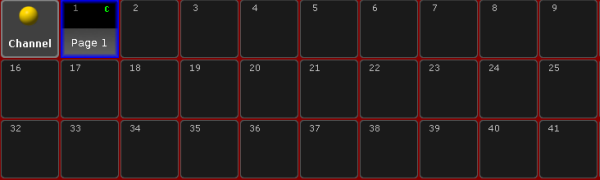
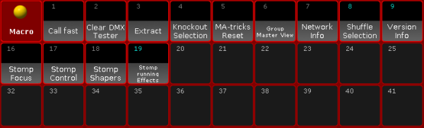
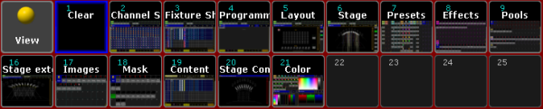
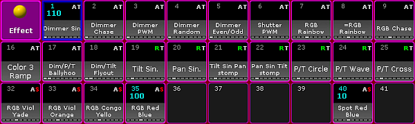

The key List is located in the command area on the left of the key Store.
Location key List
Pressing List displays the X-Key labels for the executor buttons 201-220 on the current button page. Button page on screen 1
Pressing and holding + List enters the List keyword into the command line.
[Channel]> List
Open Temporary Pools
The following short cuts open the temporary pool on screen 2 respectively (except for grandMA2 onPC without MA onPC wing).
Temporary pools can be identified by the red background color between the objects.
Pressing and holding List + Channel opens the temporary channel page pool. 
Temporary Channel Pool
[time] : Macro: Menu ChannelPage
Pressing and holding List + Group opens the temporary group pool. Temporary Group Pool
[time] : Macro: Menu Group
Pressing and holding List + Sequence opens the temporary sequence pool. Temporary Sequence Pool
[time] : Macro: Menu Sequence
Pressing and holding List + Page opens the temporary executor page pool. Temporary Executor Page Pool
[time] : Macro: Menu Page
Pressing and holding List + Macro opens the temporary macro pool. 
Temporary Macro Pool
[time] : Macro: Menu Macro
Pressing and holding List + Preset opens the temporary preset pool for the selected preset type in the preset control bar. Temporary Dimmer Preset Pool
[time] : Macro: Menu Preset
Pressing and holding List + View opens the temporary view pool. 
Temporary View Pool
[time] : Macro: Menu View
Pressing and holding List + Effect opens the temporary effect pool. 
Temporary Effect Pool
 + List enters the List keyword into the command line.
+ List enters the List keyword into the command line.